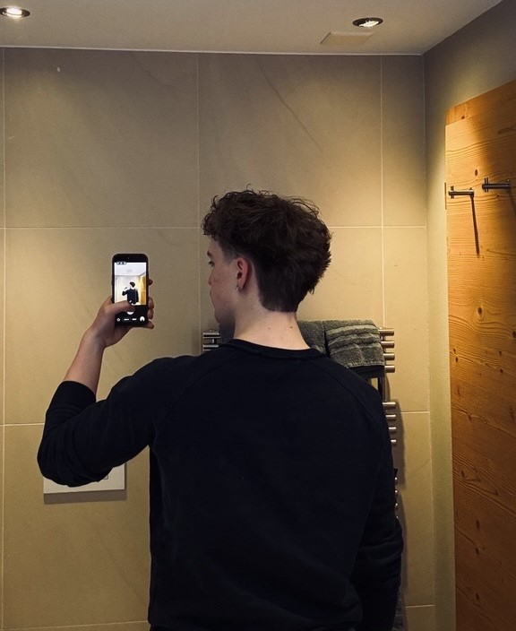
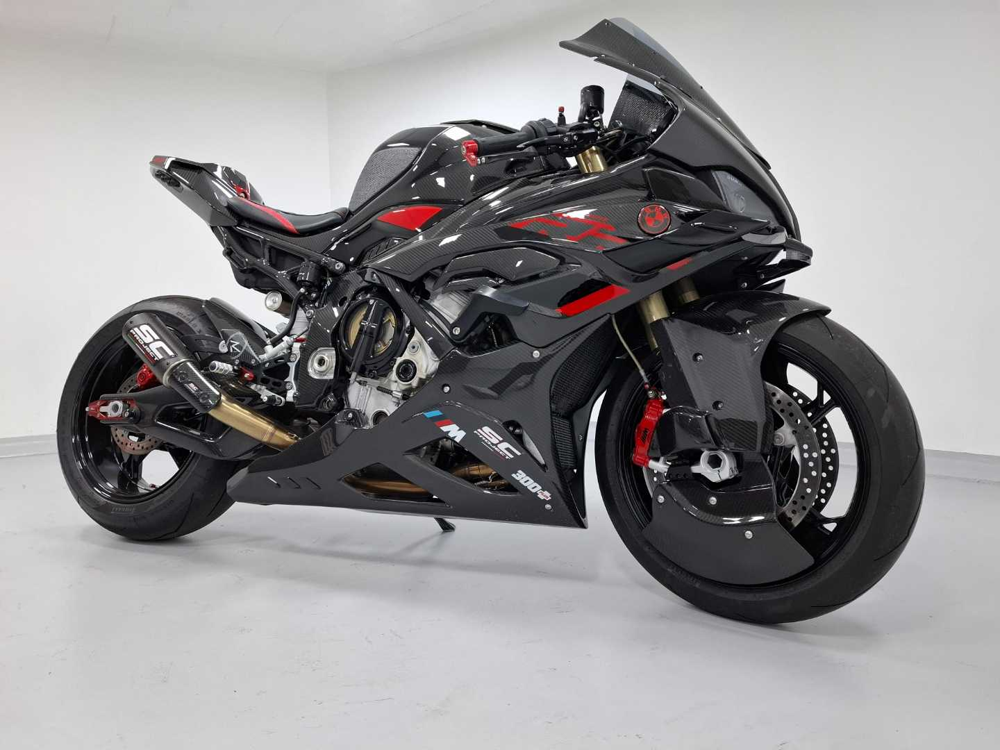
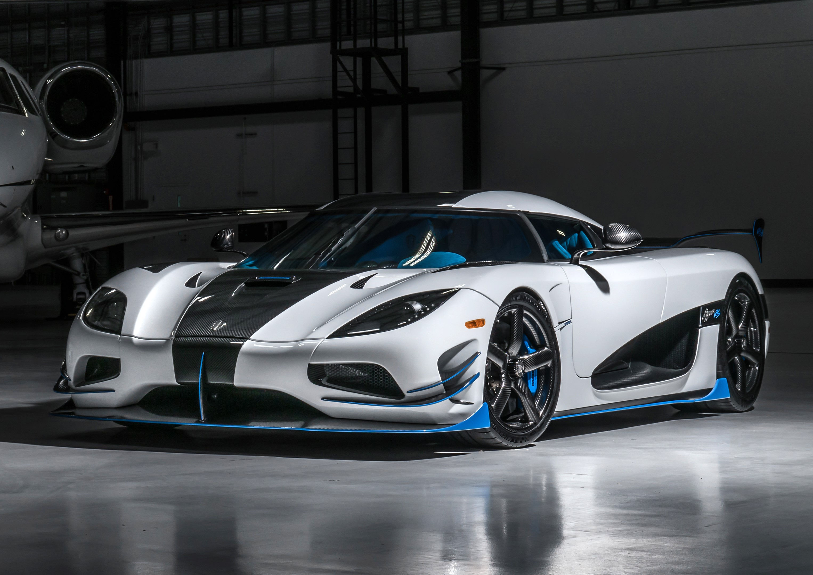
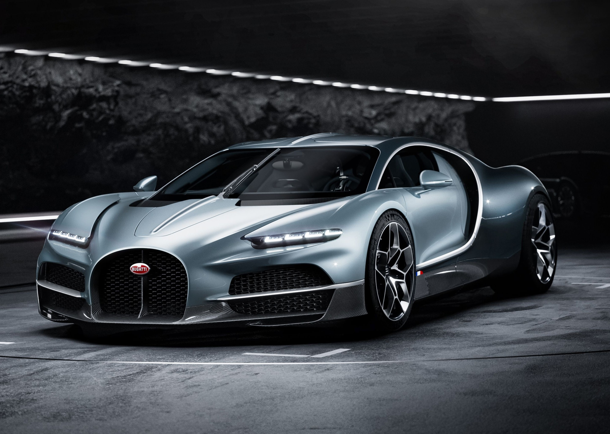

ABOUT ME
WHO AM I ?
My name is Nathan Schmid, and I am a first-year student at ETML. I have always been passionate about
the automotive world, which naturally led me to create this website focused on Koenigsegg — a brand
that perfectly represents innovation, performance, and cutting-edge engineering.
This project is a continuation of a previous website I created, where I explored automotive tuners such
as Brabus , Mansory , ABT , and AMG . With this new site, I wanted to go further by focusing on a single
manufacturer and showcasing its technologies, models, and philosophy in a more detailed and premium way.

Outside of my studies, I currently work at Migros every Saturday. I also spend a lot of time with my
friends and my girlfriend on weekends. Recently, I started going to the gym, which has become a new
way for me to stay active and improve myself.
When it comes to music, I listen to a wide range of genres, but mainly French rap artists such as
Nono la Grinta , Werenoi and PLK , as well as international artists like Travis Scott and Central Cee .
As for cars, my favorite brands include BMW , Koenigsegg , and Bugatti — each representing a unique
approach to performance, design, and engineering.
MY FAVORITES

BMW s1000r
A high-performance superbike combining
cutting-edge technology, aggressive design,
and track-ready precision.

Koenigsegg Agera rs
A record-breaking hypercar blending
extreme speed, lightweight engineering,
and pure performance.

Bugatti tourbillion
A next-generation hypercar merging
mechanical artistry, luxury,
and hybrid performance.